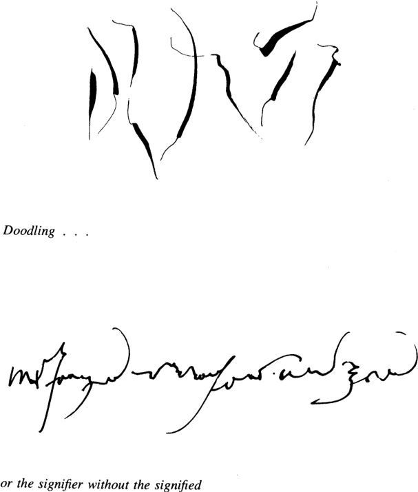
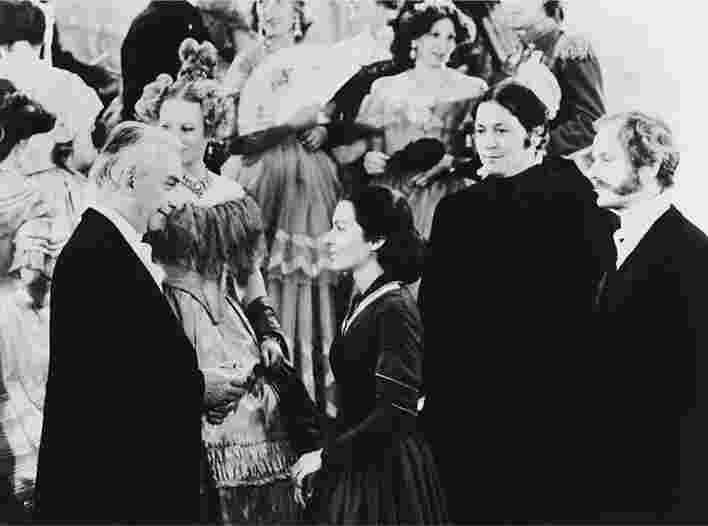

1975年，巴特在一次访谈中解释了“愉悦”一词在他作品中的重要性，他说他想要“为某种享乐主义负责，这是一种名声狼藉的哲学思想的回归，它已经被压抑了数个世纪”（《访谈录》，第195/206页）。《文之悦》是这一复兴尝试的主要记录，但愉悦在巴特的其他作品中也扮演着重要角色。他在《罗兰·巴特自述》中这样问道：“思想对于他来说，如果不是一阵愉悦的感觉，那又是什么？”（第107/103页）。他在《萨德、傅立叶、罗犹拉》中宣称：“文本是愉悦的客体”（第12/7页）。但愉悦必须要被感受到 。“文学的挑战就是，这部作品如何能够与我们产生关联，让我们感到震惊，让我们变得充实？” [19]
《文之悦》是关于文本愉悦的理论，但同时也是一本手册，甚至是一篇忏悔。巴特写道：“一个故事让我感到享受的部分，并不是它的内容，甚至也不是它的结构，而是我在光滑的表面所施加的摩擦：我快速前进，我跳跃，我抬头，我又再次埋头阅读”（第22/11——12页）。愉悦或许来自漂移 ，“每当我不在乎整体 的时候，就会出现”这种情况，他的注意力被看似模糊、戏剧化，甚至有些过度精确的语言所吸引（第32/18页）。比如，“精确状态”这个词让他感到愉悦：“在《布瓦与贝居榭》中，我读到了这个句子，它让我感到愉悦：‘布料、床单和餐巾正垂直晾着，木制的夹子把它们固定在紧绷的绳子上。’在这个句子中，我欣赏一种过度的精确，一种对于语言的精确状态的迷恋，一种描述性的疯狂（在罗伯——格里耶的作品中会遇到这种情况）”（第44/26页）。巴特用日常生活的细节描述着他在阅读小说、传记或历史作品时所感受到的愉悦，他进一步设想一种基于消费者愉悦的美学和“一种关于阅读愉悦（或愉悦的读者）的分类研究”，其中每种阅读症状都能找到特定的文本愉悦：拜物主义者喜欢片段、引言和特别的表达方式；强迫症患者喜欢操控元语言、注释和阐释；妄想狂喜欢进行深度阐释，发掘秘密和内情；歇斯底里者充满了狂热，他放弃全部的批评距离，全心投入文本（第99——100/63页）。
对于阅读和愉悦的讨论看似在倡导文本的神秘性，但巴特坚持认为，“正好相反，全部努力在于将文本的愉悦以物质形式表达出来，让文本成为愉悦的客体，就像其他类似事物一样 ……最重要的是让愉悦的场域变得平等，废除实际生活和思想生活之间的虚假对立。文本的愉悦就在于：提出声明，反对分裂文本”，并且坚持将情欲投注扩展到所有类型的客体，包括语言和文本（第93/58——59页）。
为了将文本引入愉悦的场域，巴特向身体发出召唤：“文本的愉悦就发生在我的身体追求自身思想的那一瞬间”（第30/17页）。他还说：
第98——99/62页
指涉身体是巴特所做的总体尝试的一部分，他试图对阅读和写作提出一种物质性描述，这一做法有四项特定功能：首先，引入这个出人意料的术语取得了一种有益的陌生化效果，尤其是在法国传统中，自我一直以来都被等同于意识，典型的例子是笛卡尔式的“我思”：“我思故我在。”这个自我是一个意识到自身存在的意识，但它并不是体验到文本愉悦的实体：“身体”才是巴特用来称呼这个实体的名字——一个总体上更加模糊、更加异质化的实体，相比笛卡尔式的“精神”，它受到的控制更少，对自身的开放程度也更低。
其次，结构主义花了很大力气来证明，具有意识的主体不应该被当作给定物，并被视为意义的来源，而是要把它看作是通过主体发挥作用的文化力量和社会代码的产物。比如，具有意识的主体并不是它所说的语言的主人。我的身体能说、能写、能理解英语，在这个意义上可以说我“懂”英语，但是我不可能意识到构成我的语言理解的庞大且复杂的规范体系。诺姆·乔姆斯基认为，我们不应该说儿童“学习一种语言”，就好像这是一种有意识的行为，应该说语言在儿童内部“不断发展”。他把语言称为一种“精神器官”，把它和身体联系起来，从而强调其中涉及的不只是意识。其他的文化技能所包含的内容同样不只限于有意识的理解：葡萄酒的鉴赏家并不能解释如何区分不同年份的葡萄酒，但他的身体知道该如何区分。巴特对于“身体”一词的用法体现了这方面的思考。

图12 涂鸦。
第三，巴特在《S/Z》中提出（本书第七章引用了这段话），既然结构主义把主体看作是大量代码和结构力量的产物，我的主体性只是一种虚假的充分性，是所有构成我的代码所留下的痕迹——巴特不得不回避他自己坚持提出的大量问题，只有这样他才能谈论主体的愉悦，但是他需要一种适当的谈论方式，从而来解释摆在面前的事实，即一个人能够阅读和欣赏一个文本，无论他的主体性多么刻板或者泛化，某些感受必须被视为他特有的体验。身体 这一概念允许巴特回避主体存在的问题：他求助于“这一给定的特质，它将我的身体与其他身体分离开来，并且将苦难或愉悦挪为己用”，从而强调自己不是在谈论主体性。当一位俄罗斯领唱者歌唱的时候，“这个声音不属于个人：他所表达的不是领唱者本人，不是他的灵魂；它不是原创的，但与此同时，它又是个人的：它让我们听到一个没有身份、没有‘个性’的身体，但这个身体同时也是一个分离的身体”（《意象、音乐、文本》，第182页）。作为对巴特“语法”的戏仿之作，《轻松学会罗兰·巴特》很好地抓住了这个主题；它指出，在罗兰·巴特的作品中，你意识到你不能光靠说“毫无疑问，这是因为你的身体和我的不一样”这样的话来和别人达成一致。 [20]
第四，用“身体”替代“精神”符合巴特对于能指的看法，他强调能指的物质性是愉悦的源泉之一。当听到歌唱的时候，他更愿意使用具有身体意味的“声音的质地”这样的表述，而不是表现、意义或发音。在日本的时候，日本文化对于外国人而言所呈现的模糊特质（他不能理解对于本国人来说显而易见的意义）让他欢欣鼓舞。他所目睹的一切变成了令人愉快的身体运动的展示：“在那里，身体存在”（《符号帝国》，第20/10页）。
不过，虽然有这些特定的目的，求助于身体的做法总是可能陷入神秘化的困境。巴特自己的表述有时说明，来自身体的体验更深刻，更真实，而且比其他事物更加自然。“我可以用语言做一切事，但身体却做不到 。我用我的语言来掩盖的内容，我的身体却把它说了出来”（《恋人絮语》，第54/44页）。听一位俄罗斯领唱者歌唱：“那里有某个事物，显露在外，难以去除，它超越了词的意义（或者说，位于意义之前），它就是这位领唱者的身 体 ，从胸腔、肌肉、膈膜和软骨的深处，从斯拉夫语言的深处，传到你的耳朵里”（《意象、音乐、文本》，第181页）。把文本分析看作是基于享受的身体，这实际上就是宣称这样的分析具有相当程度的本真性——远比基于怀疑的头脑更加真实。《轻松学会罗兰·巴特》注意到，当被问到一个声明背后的权威性时，像罗兰·巴特那样说话的人应该回答：“我在我的身体那里开口说话。”巴特后来肯定了这一分析的灵敏性，在《明室：摄影札记》的开头，他问道：“关于摄影，我的身体知道些什么？”（第22/9页）——这个问题以身体知识的优越性作为前提，它希望听到这样的回答：“甚至比你的头脑所知道的还少。”
如果，就像在巴特的用法中时常出现的那样，“身体”是“主体”的替代品，那么这个术语就提供了一种方式，既能够避免讨论无意识和精神分析，同时又不必放弃对于自然的诉求，这样的自然相比有意识的思维更加基本。巴特提出，对于过往时代的任何作家来说，“任何时候，只要是身体（而不是意识形态）在写作，那么总有取得‘先锋’效果的机会”（《访谈录》，第182/191页）。对于身体的召唤意味着，在作家思想所呈现出的稍纵即逝的文化特征背后潜藏着某种自然根基；与此同时，对于身体的召唤也造成了巴特在“人的家族”中曾经分析过的神秘化现象，他在这篇文章中指出，某些照片试图在人类身体中定位一种普遍自然，这样的自然超越了文化条件和制度的表面差异。
巴特非常了解在诉诸身体（或者说，诉诸欲望；在近来的法国思想中，欲望同样被用作自然的新代名词）的过程中可能伴随出现的神秘化现象。《意象、音乐、文本》注意到，有机总体概念（它“必须被分化”）的神秘力量很大一部分来自它对于身体的暗中指涉，把身体视为统一的总体性所呈现的形象（第174页）。《罗兰·巴特自述》把身体 视为他的“自然力量——词汇”：“这个词具有热情、复杂、难以形容，甚至有些神圣的意指效果，它造成幻觉，让人以为这个词可以解释一切”（第133/129页）。但在他的新享乐主义中，巴特既不愿意放弃这个术语，也不愿意放弃对于自然的潜在指涉，他的新享乐主义时常把自然带入到他的写作中。他曾经无情地揭露资产阶级想要以自然取代文化，从而消灭智识，完全依靠直接“感知”或本能，但现在他却写出这样的话：“我确信自己听到——身体带来的确信，兴奋带来的确信——拨弦键琴所演奏的万达·兰多芙斯卡的乐曲源自她的体内，而不是来自这么多演奏者琐碎的手指弹拨（他们的人数如此之多，以至于它变成了一种完全不同的乐器）”（《意象、音乐、文本》，第189页）。这是一个截然不同的巴特？
事实上，除了我刚才提到的策略功能，诉诸身体几乎没有任何解释效力。在《明室：摄影札记》中，巴特问道：“对于摄影，我的身体知道些什么？”他只发现某些照片“为我存在”。随后，他“提出一条结构主义法则”，一条对比法则：一张照片的“感知层面”（这是巴特采用的名称），是人们借助总体文化和对于世界的理解——对于被表征物的理解——所得到的感受，而一张照片的“刺点”，则是打断或者扰乱那一场景的事物，“刺痛我的事件”（第44——49/23——27页）。巴特得出结论：“我不得不承认，我的欲望是一种不完美的中介物，主体性一旦沦为享乐主义思想，就不可能接受普遍性”（第95/60页）。（在《明室：摄影札记》的第二部分，他进一步把摄影与爱情和死亡的总体力量联系在了一起。）
尽管《文之悦》一再指涉身体的愉悦，但它同时也是一部理论作品。它把《S/Z》中提出的“可读”与“可写”之间的区别改为了“喜悦”与“迷乱”这两种愉悦感受之间的非均衡的对立关系。有时，愉悦 被用作各种阅读愉悦的通用词汇。“一方面，当我必须提及文本的过度状态时，我需要一种泛指的‘愉悦’……另一方面，当我需要把欣喜、充实、舒适（当文化自由渗透时所产生的充足感觉）与震惊、扰乱甚至失落（它们适合迷乱）区分开来的时候，我需要一种特指的‘愉悦’，它是作为总体的大写的愉悦的一部分”（第34/19页）。巴特不时地强调这一区分：愉悦的文本是可读文本，我们知道该如何读这样的文本；迷乱（“jouissance”一词不幸被英译本的译者误译成“bliss”）的文本是“施加了一种失落状态的文本，它让人感觉不适（或许还会产生某种厌倦），扰乱了读者的历史、文化、心理等种种假设，也破坏了他的品味、价值观和记忆的一致性，让他和语言的关系产生了危机”（第25——26/14页）。

图13 与女演员玛丽-弗朗丝·皮西尔演对手戏，在安德列·泰西内导演的电影《勃朗特姐妹》中，巴特扮演了萨克雷。
这本书探寻两种文本或两种关于文本的视角之间的关系（历史学、心理学与类型学），在坚持区分的重要性之余，还多次提出，文本愉悦和文本效果取决于能否在舒适的愉悦文本中找到迷乱的时刻，或者能否让迷乱的后现代写作变得充分可读，从而能产生干扰性的、强烈的、令人异常兴奋的效果。巴特写道：“文化本身或文化的毁坏都不会引起欲望，真正引发冲动的是它们之间的缺口……给愉悦留下深刻印象的并不是暴力；破坏不会让它感兴趣，它渴望得到的是失落、缝隙、切口和收缩的场所，是在读者迷乱的时刻将其抓住的消散 ”（第15/7页）。在激发欲望方面，裸体还不如“服饰留出缺口”的部位（第19/9页）。先锋派技巧（或者说，对于传统预期的干扰）作为可读话语中的缺口，在惊奇之余更能让人愉悦：例如，福楼拜有“一种方法能割开缺口，在话语中打孔，并且不至于让话语变得毫无意义”（第18/8页）。“文本需要它自身的影子，些许 意识形态，些许 表征，些许 主体：鬼魂、口袋、踪迹、必要的云彩。颠覆必须产生它自身的明暗对比 ”（第53/32页）。即便如此，巴特说，不连贯、消散、不确定和不可读的时刻意味着某种厌倦。他说：“厌倦与迷乱相去不远，它是站在愉悦的岸边所看到的迷乱”（第43/25——26页）。“不存在真诚的 厌倦”——它只是根据其他要求所获得的迷乱。
关于厌倦的这条格言可以说明巴特在《文之悦》中所做的努力。通常我们认为厌倦是一种直接的情感体验，但它也是一种主要的理论类别，在任何阅读理论中都起作用。如果人们仔细阅读左拉小说中的每一个词，他们就会感到厌倦。同样，如果人们尝试快速浏览《芬尼根的守灵夜》，希望能借此了解小说情节，他们也会感到厌倦。对厌倦进行反思就是要思考文本以及它们所需要的阅读策略，这一举动更多的是一种理论，而不是忏悔。如果说《文之悦》看起来并没有严肃对待自己，没有把自己当作一本理论著作，而且刻意避免连贯性，这并不意味着读者就不用严肃对待这部作品，读者应该把它看作是一项绵延的理论规划中的若干片段。
巴特复兴享乐主义的尝试或许是他最难评价的理论设想，因为一方面这种尝试沉溺于他之前曾成功揭露的神秘化运作，另一方面它又持续地向智识的正统地位发起挑战。当代最强有力的理论设想（尤其是巴特曾经支持的那些）都把愉悦看作不相干的内容，放到一边，因此他宣扬享乐主义的做法是一种激进的举动。但与此同时，他褒扬文本愉悦的立场又将文学批评引向了传统主义者从未放弃的那些价值观，而对于许多人来说，他对于身体愉悦的指涉造就了新的巴特形象，不再像从前那样令人生畏，不再偏重科学或智识。他公然反抗他曾经协助创立的智识氛围，这一举动在某种程度上让他更适应广大公众的品味，他们如今在他的身上看到了一个熟悉的形象：感情细腻的、自我放纵的文人，书写他自己的兴趣和愉悦，对于基本的思维方式不构成任何挑战。巴特的享乐主义在某种意义上既是策略性的，又是激进的。因为倡导享乐主义，他一再受到他人的指责，被施加了自满的罪名。《作家索尔莱斯》谈到了“从能够带来感官享受的客体到话语的转变过程”所带来的核心愉悦，有了这种愉悦，最严肃的写作也不再让人厌倦。索尔莱斯的作品“《H》是一片词语的森林，我在其中寻找能够打动 我的事物（当我们还是孩子的时候，我们时常在乡下搜寻藏在那里的巧克力蛋）……我等待着能够触动我并且为我 确立意义的片段”（第58/77页）。虽然在情感上试图造成一种突降效果，上句括号中的内容或许是巴特作为作家最大胆的瞬间之一，但读者在阅读这样的片段时应该带着些许警惕。